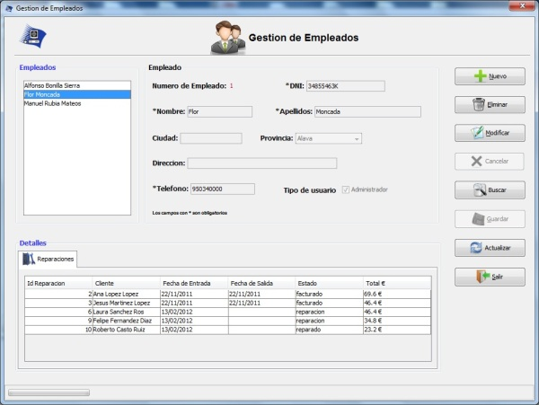

Gestion de Empleados
Gestion de Empleados
Desde el menu gestion de empleados se gestionaran los empleados del sistema
Se podra dar de alta,baja,editar y buscar empleados, tambien se mostraran las reparaciones de que tiene asignada cada empleado.
Cuenta tambien con la opcion de guardar y deshacer los cambies hechos en los empleados
Imagen del menu Gestion de Empleados.

Las opciones del menu gestion de empleados son:
- Nuevo : para dar de alta un nuevo empleado
- Eliminar : Para eliminar un empleado (solo se pueden eliminar empleados que no tengan reparaciones asignadas)
- Modificar : Para editar un empleado
- Cancelar : este boton se habilita despues de un alta o una modificacion y sireve para cancelar un alta o modificacion
- Buscar. : Para buscar un empleado
- Guardar : para guardar los cambios realizados
- Actualizar : deshace todos los cambios sin guardar y actualiza la lista de empleados con los datos de la base de datos
- Salir : Cierra el menu de gestion de empleados